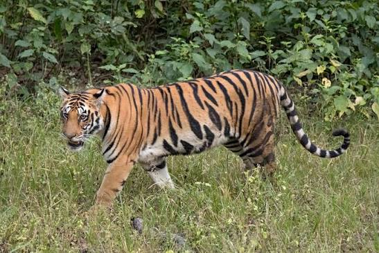

IUCN status: Endangered
Tiger
Panthera tigris
Tigers are the largest living cats and solitary predators that use forests, grasslands and mangrove swamps across Asia. They help keep ecosystems balanced by regulating prey populations. Tigers are threatened mainly by habitat loss and fragmentation, poaching for illegal wildlife trade, and conflict with people.
Recent population statistics
About 5,574
estimated wild tigers worldwide
13
countries still have wild tiger populations
About 95%
of the historical tiger range has been lost
Latest published estimate: 2023 Global Tiger Forum report. Historical range estimate: WWF.